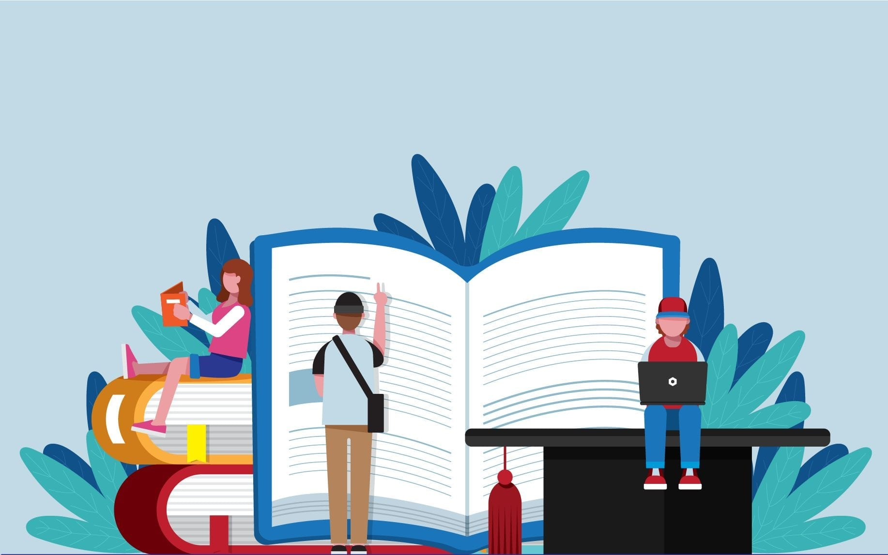

Education
Donation can give children the resources needed for a path out of poverty.Underprivileged children and youths can get learning environment.
Hospital
Donations can be made to the hospital towards research and for the benefit of poor patients.